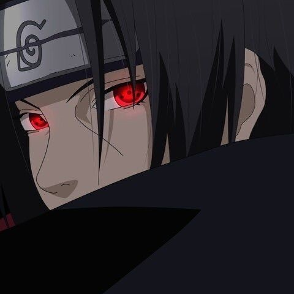
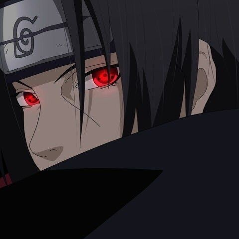

Naruto
Naruto Uzumaki é o protagonista de "Naruto", um ninja determinado da Vila da Folha que deseja se tornar o Hokage. Ele possui um espírito enérgico e abriga o chakra da Raposa de Nove Caudas. A série narra suas jornadas em busca de reconhecimento, amizades e proteção para sua vila, enquanto supera seu passado como um órfão rejeitado.
 
